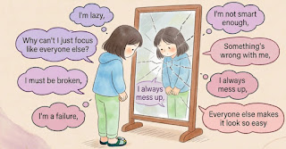
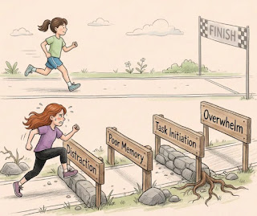

Finding the Lost Girls
Why ADHD is so often missed in girls, and how schools and families can find them sooner.
One of the things that has come to the surface over the last few years is the number of girls with ADHD where their needs were completely missed. ADHD is hard to spot in girls as they are good looking like they are doing the right thing. They quietly and subtly seek support from their peers to fill in what they miss. What does come out midway through secondary (just as the exam years hit) is anxiety, poor self esteem, frustration and underachievement. This impacts social relationships and well being. If left too long it can lead to mental health problems. The blame is too often put on the student for simply not trying hard enough when in reality they are working overtime to keep up and blend in.
My journey started 3 years ago when I moved back to Europe from Asia to start a whole school Inclusion role. This led me to spend more time in secondary school than I had in my previous roles. One of my first experiences was a meeting with an upset mother and daughter who was in Year 11. The daughter had just been diagnosed with ADHD after having performed poorly in her Year 10 mock exams. In her end of year report and in parent teacher meetings many teachers had suggested that she simply hadn't worked hard enough or spent enough time preparing for the exams. Both mother and daughter knew this simply wasn't true, she had worked hard and prepared carefully for the exams. However working memory difficulties which are part of ADHD had meant a lot of what she thought she had learnt did not stick. This along with impact of stress on her memory during the exam and difficulty sustaining her focus to read the questions thoroughly and use time wisely all impacted her performance.
It wasn't a case of working harder but working smarter. She needed to be introduced to revision strategies that actually work for those with ADHD. Revision strategies need to be active and they need to ensure that the subject material is processed at a deeper level so that working memory difficulties are overcome. Exam access arrangements like extra time and separate invigilation helped to reduce stress which impacts working memory. Being able to move around and talk aloud greatly improved her performance. She also needed teachers to regularly check in with her in lessons so that she did not lose focus and if she had missed information they could offer clarification. She benefited from some private sessions with teachers to go through some concepts more carefully.
This was only the first of many experiences of girls who were misunderstood and faced stress and failure as a result. I had to rethink what I understood about ADHD and how it presents itself in girls. One of the main lessons that I have learnt is that observation is not an effective tool for identifying ADHD in girls. If they are fidgety it is in subtle, socially acceptable ways. They might fiddle with their hair and reorganise their pencil case for example. If they tune in and out of lessons it can also be hard to see as they will be facing the teacher and look like they are paying attention. If they miss an instruction or an important bit of information, girls quietly look for ways to fill in the gaps. They will check the information on the board, look through previous notes, quietly ask a friend for help or copy the answer from the person next to them. Sometimes they will even try to look busy and then complete the work at home when they have time to make sense of what was being asked. Whichever strategy they use it is rarely noticed by the teacher. For many girls with ADHD the distraction or daydreaming is internal. Inattentive ADHD is more common in girls and if there is hyperactivity it can be in social acceptable ways like being very talkative or sporty.
"I think my ADHD was missed because I was never a huge problem in the classroom. Sure, I was talkative, and distracted my peers when I got bored, but I never disrupted the class as a whole. It was more internal for me; I zoned out, procrastinated, and had issues regulating my emotions." Year 11 student
The key to identifying ADHD in girls is in listening to parent observations and listening to the student themselves. Most girls with ADHD have this nagging sense of 'what is wrong with me?' as they struggle to meet the expectations of friends, family and teachers. They are aware that they are often working much harder than their peers to keep things together.
"For the longest time, I had thought there was something wrong with me. My ADHD affected me socially, often making it more challenging to make and maintain friendships, as well as academically– I basically failed my first two years of high school. And a lot of my teachers assumed it was because I was lazy and unmotivated. "
Girls tend to suffer in silence and will go to great lengths to hide the struggles they are facing. Academically difficulties are often only noticed when a girl gets an unexpected low mark on an assessment. Even then teachers may overlook it and think the student is having an 'off' day. Friendship issues can also be a red flag as sometimes girls with ADHD have difficulties managing their emotions. They may overshare and discuss things that were meant to be secret or they will misunderstand conversations as they lose track of what is being said. Forgetfulness can also be interpreted as not caring. Again adults may dismiss the difficulties as just a 'phase' that the girl is going through.

Creating a climate in school where students feel safe to disclose their concerns is important. They might not realise that ADHD is the issue but they will wonder why they are finding life so hard. If the school has a counsellor or nurse, then this might be the first port of call. This is why it is important for schools to have student support teams where concerns about student well being is discussed and shared. When interviewing a concerned student it is important to let them talk rather than working through a ADHD checklist. Open ended questions about how they find their school day, what they like to do at home, what their morning routine is like or how they tackle homework can all be very revealing.
The parent view point is also an important piece of the puzzle. Sadly as much as schools talk about parent partnership, there remains a distrust of parent perspectives. Some students who seem like model students in school can be very difficult at home. The teacher assumption is often that the parent is not being firm enough. Occasionally this could be the case but more often it is simply that the student feels safe to be themselves and let out emotions that they have holding together all day. We know as adults that we behave differently in different situations. We also know that we can be unhappy in job, but nonetheless smile at work and try to make the best of it. We should not be surprised when children do the same. Students have no choice but to attend school and so it is only natural to try to make the best of it or compensate outside school with activities that they enjoy. Parents see a different side of their child which is crucial information is identifying ADHD. Again they may not necessarily associate the behaviours they see with ADHD as there still a lot of misinformation about the signs of ADHD. ADHD does run in families which is an important factor to consider - there may be a family member with diagnosed ADHD which we were not aware of. Equally the parents may have ADHD which has not been diagnosed and they may see their child's approach to activities as typical behaviour.
To 'Find the Lost Girl's there needs to be a proactive approach where we carefully explore unexpected academic struggles and monitor student well being. We need to educate students themselves in the signs of ADHD and take away to the stigma of having a learning difference. We also need to make it easy for students to seek help when they need it. As educators we need to value parents' viewpoints and we need to support them in understanding the signs of learning differences at different stages. Together we can find the lost girls and save them from years of self doubt and struggle.

First published on Helen's blog on 28 February 2026. Read it on the blog.